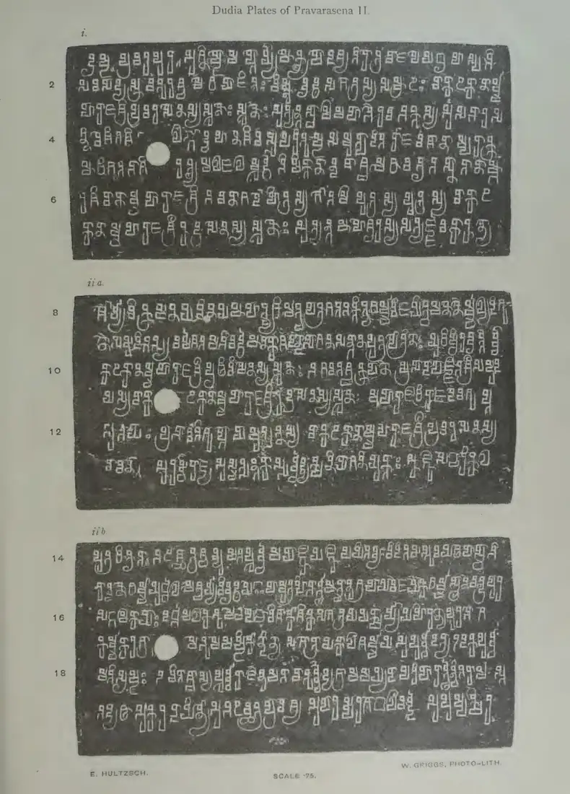
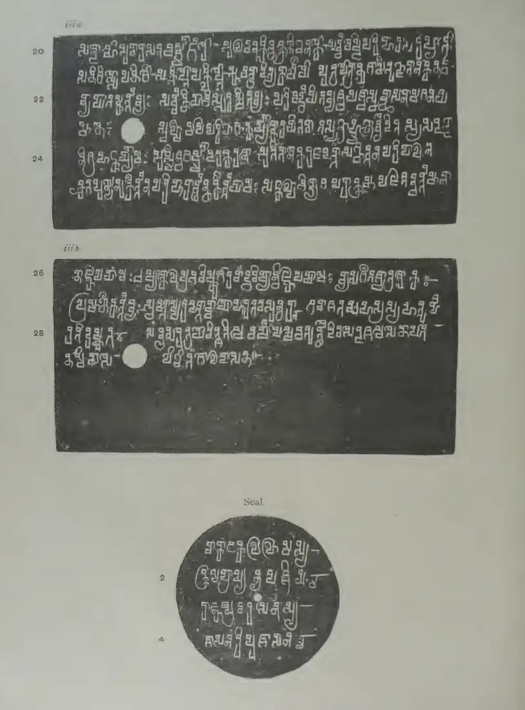

Dudia plates of Pravarasêna II
DUDIA PLATES OF PRAVARASENA II.
BY F. KIELHORN, PH.D., LL.D., C.I.E.; GÖTTINGEN.
These plates were sent to Dr. Hultzsch by Mr. H. Cousens, Superintendent of the Archæological Survey of Western India, who had received them from Mr. W. Montgomerie, Settlement Officer, Chhindwara, Central Provinces. They belong to “Bharatsa and others, Gonds, at Dudia in the Aser parganâ of the Chhindwara district.” I edit the inscription which they contain from excellent impressions, supplied by Mr. Cousens and Dr. Hultzsch.
These are four well preserved copper-plates, each of which measures 7" long by 3" broad. The second and third plates are inscribed on both sides, the first plate is so on one side only, and the fourth is blank and merely serves to protect the writing on the second side of the third plate. The plates are quite smooth, their edges having been neither fashioned thicker nor raised into rims; but the writing, nevertheless, is in an excellent state of preservation throughout. About 1" distant from the middle of the proper right margin, each plate has a hole, about " in diameter, for a ring on which the plates were strung. This ring is between and " thick, and 3" in diameter. The two ends of the piece of copper of which it is formed are flattened off, and contain holes for a rivet, which has been lost. On the ring slides a copper band, " broad, which is bent into a ring of by 1" in diameter, and the two ends of which are soldered together. Through the soldered part a hole is drilled, which corresponds to a hole in the centre of a circular seal; and a rivet, which also is lost now, must have held the copper band and the seal together.2 Owing to the loss of the two rivets,—the ring, the copper band and the seal are now quite loose. The seal is 3" in diameter, and has across its surface a legend in four lines, which will be given below.—The weight of the four plates is 3 lbs.,
1 The Tamil word mávu or má means 'one twentieth (of the land-measure called réli).'
2 Compare Dr. Fleet's description of the Siwaní plates; Gupta Inscriptions, p. 244.
that of the ring, the copper band and the seal, lb.; total, " lbs.—The size of the letters is about ." The characters belong to the southern class of alphabets, and furnish another good illustration of the 'box-headed' variety of the Central-Indian alphabet, of which we find several specimens in Dr. Fleet's Gupta Inscriptions. They are, in fact, almost identical with the characters of the Siwanî grant, in Plate xxxv. of Dr. Fleet's volume, and the only letter, the form of which essentially differs in both inscriptions, is l, as may be seen, e.g., from the representation of the words amala-jala in line 5 of both grants. As regards the present plates, it may be mentioned that we have here two forms of n (e.g. in súnóḥ súnóḥ, l. 3), of b (e.g. in bríhaspati, l. 1, and Darbbhamalaké, l. 16), and of the superscript i (e.g. in svámi-, l. 3, and Namidásé, l. 29; balivardda, l. 19, and likhitaṅ, l. 29); and that the inscription offers instances of the signs for final t, n, and m (e.g. in dríshṭam and Pravarapur[á]t, l. 1, and vasundharán, l. 27).—The language is Sanskrit, and, excepting the legend on the seal which is in the Anushṭubh metre, and one of the ordinary imprecatory verses, here ascribed to Vyása, in lines 27-28, the inscription is in prose. As regards orthography, what will probably strike the reader most, are the frequent non-observance of the rules of external saṅdhi, and the equally frequent employment of short vowels (particularly a) instead of long ones. Of changes permitted in grammar, I would specially point out the doubling of k before r, e.g. in parákkrama, ll. 4 and 25, and sarvva-kkriyábhis, l. 22; the similar doubling of th and dh before y in Bhágiratthy-amala-, l. 5, and sarvv[á*]ddhyaksha, l. 13; the doubling of v after anusvára in paradattá[m] vvá, l. 27, and saṅvvatsaré, l. 28; and the use of the upadhmáníya in bhúméḥ=pañcha°, l. 16, and rájñaḥ=Pravara°, l. 3 of the seal.—The text contains several compounds which cannot be justified by the rules of grammar, and also a number of wrong forms, for some of which the official who drew up the grant may be held responsible, while others undoubtedly are due to carelessness on the part of the writer or engraver. The phraseology of the formal part of this charter, as well as of the others issued by the same donor, in some respects1 differs considerably from that of other copper-plate inscriptions, and exhibits (in lines 19-21) some revenue-terms which have not been met with elsewhere, and of which no satisfactory explanation can as yet be offered.
The inscription is one of the Vákáṭaka Mahárája Pravaraséna II. It has been written by one Gôladása (l. 29); and is dated (in ll. 28-29) on the tenth day of the fourth fortnight of the rainy season in the twenty-third year (of the Mahárája's reign), while Namidása was the Sénápati. And its object is, (in ll. 13-18) to record the grant, in the Ārammi province or district (rájya),2 of 25 bhúmis3 (of land) at Darbhamalaka, in the Chandrapura saṅgamiká,4 to one Yakshárya of the Kauśika gótra, and of 60 bhúmis (of land) at the village of Karmakāra, in the Hiraṇyapura bhóga,5 to one Káliśarman of the Kauṇdinya gótra. Beyond this, the inscription yields no information whatever that has not been furnished already by the Chammak and Siwanî grants,6 which were issued by the same Pravaraséna II. in the 18th year of his reign. Like those other inscriptions, it opens with the word drishṭam, which I take to be employed simply as a term of good omen,7 the more so because it is not accompanied here by any other word of auspicious import; and, as is the case with the Chammak grant, this charter also professes to be issued from Pravarapura. The inscription then, up to line 12,
1 Compare especially lines 13-14, 18-21, and 24-26.
2 Compare the similar use of the word ráshtra in other inscriptions, e.g. page 145 above.
3 See Gupta Inscriptions, p. 241, note 9.
4 Chandrapura-saṅgamiká probably means a tract of land near the confluence of two rivers at, or in the neighbourhood of, Chandrapura.
5 This word, which is used also elsewhere as a territorial term, is quite clear in the original. In line 18 of the Siwanî plates we find bhága (if this be really the reading intended) used apparently in the same sense.
6 See Gupta Inscriptions, p. 235 ff. and p. 243 ff.
7 See iḥ. p. 240, note 2. Professor Bühler is inclined to take drishṭam in its literal sense and to translate it by 'seen,' the word indicating, according to his view, 'that the copy of the grant given to the donees had been seen, and was acknowledged to be correct, by the minister or by the keeper of the records;' see Ep. Ind. Vol. I. p. 9.
gives the genealogy of Pravarasēna II., exactly as it is given in the two other inscriptions, only omitting some insignificant epithets. The following lines, up to the word kīrttayādmaḥ in line 25, in which the donor issues his orders regarding the grant to the officials of the Ārammi district, specifies the time-hallowed conditions under which the land, given by him, is granted, threatens with punishment those who might molest the donees, etc., agree with lines 21-35 of the Chammak grant, except that they contain some various readings, the most important of which will be pointed out below. Then follow, in line 25, an order apparently addressed to feudatories or subordinates, and a request to future rulers, to respect this donation, followed by an imprecatory verse. And the inscription ends with the date and the name of the writer, given above. The legend on the seal also is the same as in the other inscriptions, but worded less correctly.
The date of this inscription does not admit of verification, and all I can say about it is, that in accordance with Dr. Fleet's identification1 of the Mahārājādhirāja Dēvagupta, who is mentioned in line 11 as the father of the mother of Pravarasēna II., this record would have to be assigned to about the beginning of the 8th century A.D. Compared with the dates of the Chammak and Siwanî grants, which cite the bright fortnights of the lunar months Jyaishtha and Phâlguna, the present date is remarkable in being referred to the fourth fortnight of the rainy season, equivalent, in all probability, to the bright half of the month Bhâdrapada.
The localities mentioned in this inscription I am unable to identify. Chandrapura may perhaps be the modern Chandpur, which lies to the south of Siwanî and to the west of the Wēn-Gaṅgâ river; but none of the maps at my disposal shews in its neighbourhood any of the other places referred to in this inscription.2
TEXT.3
First Plate.
- 1 Drishṭam [*] Pravarapur[ā]jt4 agnishṭōm-[â*]ptôryyâm-ôkthya-shôđasy-atirâtra-5 vâjapêya-bṛihaspati-
- 2 sava-sâdyaskra-chaturaśvamêdha-yâjinaḥ 6Vishṇuvṛiddha-sagôtrasya samrâṭaḥ7 Vâkâṭakânâm=ma-
- 3 hârâja-śri-Pravarasēnasya8 sûnôḥ sûnôḥ atyanta-Svâmi-Mahâbhairava-bhaktasya amsa-bhâra-sa-
- 4 nnivêsita-Śi[va]liṅg9-ôdvahana-Śiva-suparitushta-samutpâdita-râjavamiśânâm=parâkk r a -
- 5 m-âdhigata-Bhâgi(gî)ratthy-amala-jala-mûrddhâbhishiktânân=daśâśvamêdh - â v a b h ṛ i - ta(tha)-snâtânâm=Bhâ-
- 6 raśivânâm=mahârâja-śri-Bhavanâga-dauhitrasya10 Gautamiputrasya putrasya Vâkâṭa-
- 7 kânâm=mah[â*]râja-śrî-Rudrasēnasya sûnôḥ atyanta mâhêsvarasya saty-[â*]rjjava-kârunya-
1 See Gupta Inscriptions, Introduction, p. 15.
2 [Hiraṇyapura might be the modern "Hirapur," S. S. E. of Sâgar.— E. H.]
3 From impressious, supplied by Mr. Cousens and Dr. Hultzsch.
4 Here and frequently below, the rules of samñdhi have not been observed.
6 Originally -atirôtra- was engraved, but it has been altered to atirâtra-.
6 The first akshara of this word is really more like chi in the original.
7 Read samrâjaḥ, for samrâjô; the Chammak plates have samrâd, the Siwanî plates sashraḥ.
8 Read -śrt-, which may be the reading of the original.
9 Of the akshara va, in brackets, either only a small portion was actually engraved, or the akshara has been almost completely effaced.
10 Read śrt-.
Plate 1 is bound after this page.
Plate 2 is bound after this page.
Second Plate; First Side.
8 śauryya-vikkrama-naya-vinaya-mâhâtmya-dhimatva-pâtragatabhaktitva-1dharmmavija y i-
tva-manônairmmaly-[â*]di-gu-
9 nai[h*] samuditasya varsha-śatam=abhivarddhamâna2-kôśa-daṇḍa-sâdhana-santâna-
putra-pautriṇaḥ Yudhishthira-vrittêr=Vvâ-
10 kâṭakân[â*]m=mahârâja-śrî-Pṛithivishêna(ṇa)sya sûnôḥ bhagavataś=Chakkrapâṇê[h*]
prasâd-ôpâ[r*]jjita-śrî-samuda-
11 yasya Vâkâṭakânâm=mahârâja-śri-Rudrasênasya3 sûnôḥ mahârâjâdhirâja-
Dêvagupta-
12 sut[â]yâḥ4 Prabh[â]vatiguptâyâm=utpannasya Vâk[â*]ṭakânâm=mah[â*]râja-śrî-
Pravarasênasya
13 vachanât Ârammi-râjyê asmatsantakâs=sarvv[â*]ddhyaksha-niyôga-niyuktâḥ
âjñâsañchâri-kula-
Second Plate; Second Side.
14 putr-[â*]dhikṛitâḥ bhatâś=chhâtras=cha5 vyushatapûrvvamay=âjñâyajñâ-
payitavy[â]ḥ [!*] Viditam=astu va(vô) yath=êh=âsmâbhi-
15 r=âtmanô dharmm-âyur-bbalam-aiśvaryya-vivriddhayê6 ih=âmutra hit-ârttham=âtm-
ânugrahâya vaijayaikê7 dharmma-sthânê Chandrapura-
16 saṅgamikâyâḥ8 Darbbhamalakê bhûmêḥ=pañchavisâ[m]9 Kauśika-sagôtr[â*]ya
Yakshâryyâya Hiraṇyapura-bhôgê
17 Karmmakâra-grâmê bhumê10 shashti Kauṇḍinya(nya)-sagôtrâya Kâliśarmmâya11
apurva-datyâ12 udaka-pu(pû)rvva-
18 m=atisṛishtâḥ13 [!*] Uchitâś=ch=âsya14 pûrvva-râj-ânumatâm châturvvaidya-grâma-
mayyadâ15 parihâr-ârtthan(m)=vitarâmas=ta-16
19 tad=yathâ akaradâyinyau17 abhatachchatraprâvêsya18 apâramparagôbalivardda
apushpakshira-
1 B. ad -dhîmattva-pâtrâgatabhaktatva-. Instead of pâtragata the Chammak plates actually have kâtrâgata, while the Siwanî plates, too, read pâtragata.
2 The actual reading of the original may perhaps be =abhiva°.
3 Read -śrî-.
4 Read -sutâyâm, which is the reading of the Chammak plates. Before Dêvagupta- one misses the word śrî- which the other plates have.
5 Read =chhâttrâś=cha viśruta-pûrvvay=âjñay=âjñâpa°. The other plates both have viśruta instead of the meaningless vyushata-.
6 Read -bbal-aiśvaryya-.
7 Read vaijayikê.
8 Read °kâyâm.
9 Between the aksharas mê and hpa another akshara, perhaps ê or cha, was originally engraved, but the bak of the impression shews that it has been struck out again. One would have expected bhûmayaḥ (or bhûm.tnâm) pañchavimśatih.
10 Read bhûmayaḥ (or bhûm.tnâm) shashtiḥ.
11 Read Kâliśarmmaṇê.
12 Read apûrvva-dattyâ.
13 Read °ṛishtâḥ.
14 Read uchitâm ch-. The word asya must be taken to refer to the two pieces of land, mentioned before, collectively.
15 Read -maryyâdâm. The Siwanî plates have nothing corresponding to the sentence uchitâś=ch=âsya vitarâmas; the Chammak plates have it, but omit from it the word parihârdrtham.
16 Originally °tarâmaḥ sta- was engraved, but the sign of visarga has been struck out. At the commencement of the next line the concluding ta of this line is erroneously repeated.
17 The dual is used here and below, rather ungrammatically, because these adjectives refer to the two pieces of land, spoken of before.
18 Read °chchâttraxprâvêyau, and, in the next word, °varddu. The four terms beginning with apâramparagôbalivardda and the term sakliptôpaklipta in l. 21 I am unable to explain.
Third Plate; First Side.
20 sandôhau avâ(châ)râsanacharmmângârau1 | 2 alavana(ṇa)klinnakkrêṇikhanakau |
sarvvavê(vi)shṭti-parihâra-parî(ri)hṭitau |
21 sanidhis=sôpanidhî3 | sakli(kli)ptôpakli(kli)ptau | âchandrâdîtyakâlîyau |
putrapautrânugâmî4 [|*] bhuñjatâ5 na kênachi-
22 6vyâghâtam=karttavyah [|*] sarvva-kkriyâbhis=samrakshitavyah7 parivarddhayitavyas=
cha [|*] Yas=ch=âsmach-chhâsanâ(na)m=agana(ṇa)ya-
23 mânê(na)h svalshâ(lpâ)m=api paribâdhâ[m]8 kuryyât=kârayita9 vâ tasya
brâhmaṇair=vvêditasya sadaṇda-
24 nigrahañ=kuryyâmah10 [|*] Asmîs=cha11 dharmm-âdara-karaṇê atît-ânêka-raja-
dattâin12 sañchittana-paripâlana[m*]
25 kṛita-puny-ânukîrttana-parihâr-ârtthan=na kîrttayâmah sañkalp-âbbidyôdha-13
parâkkram-ôpajât[â*]n=varttamânâ-
Third Plate; Second Side.
26 n=âjñâpayâmah 14êshyatat-kâla-prabhavishṇu-gauravâmd=15bhavishyân=vijñâpayâmah
[|*] Vyâsa-gîtas=ch=âtra slôkah |16
27 pramâṇîkarttavyah | 17Sva-dattâm=para-dattâ[m] vvâ yô harêta vasundharân(m) |
gavâ[m*] śata-sahasrasya hattu(ntu)r=ha-
28 rati dushkṛitam |(||) Samvvatsarê trayôvitsatimê18 varsh[â*]-pakshê chaturtthê
divasê daśamê sênâpatau |19
29 Namidâsê | likhitam Gôladâsêna. ||
The Seal.
1 The actual reading of the original looks rather like ormmârûgarau.
2 The signs of punctuation in this line and in the next are superfluous.
3 Originally onidhau was engraved, but it has been altered to onidht. Instead of the preceding sanidhis read sanidht.
4 Read, in accordance with the rest, ogâminau.
5 Read bhuñjatôm.
6 Read d=vyâghâtah. The Chammak plates have kênachi vyâghâtam.
7 Read, here and in the next word, otavyau.
8 In the original this sign of anusvâra is placed above the following ku.
9 Read, with the Chammak plates, kârayitâ. One would have expected kârayêd=vâ.
10 Read kuryydma.
11 Read asmimâs=cha. For the following word, the reading of which is quite certain, the Chammak plates have dharmm-âvara-karaṇê, which I do not understand; and the Siwanî plates, dharmm-âdhikaraṇê. As pointed out by Dr. Fleet, dharmm-âdara-karaṇê is what Dr. Bhagvanlal Indraji proposed to read.
12 Read orâja-datta-sañchintana-, which clearly is the reading intended in the Chammak plates.
13 Read -âbhiyôga-(?). The other plates have nothing corresponding to the sentence sañkalp-âjñâpayâmah. The choice of the verb âjñâpayâmah, contrasted with the following vijñâpayâmah, appears to shew that the words sañkalp- . . . -ôpajâtân refer to feudatories or subordinates of the mahârâja.
14 Read êshyat-. The original looks as if the engraver first had engraved correctly êshyatkâla-, and had inserted the superfluous ta afterwards. The Siwanî plates have êshyantatkâla-.
15 Read -gauravâd=.
16 This sign of punctuation is superfluous.
17 Metre : Slôka (Anushṭubh).
18 Read trayôvimâtaimê or, correctly, trayôvimâtaitamê.
19 This sign of punctuation is superfluous.
20 Metre : Slôka (Anushṭubh).
21 This sign of punctuation is superfluous.
22 Read oprâpta-nripasriyah.
23 This sign of punctuation is superfluous.

